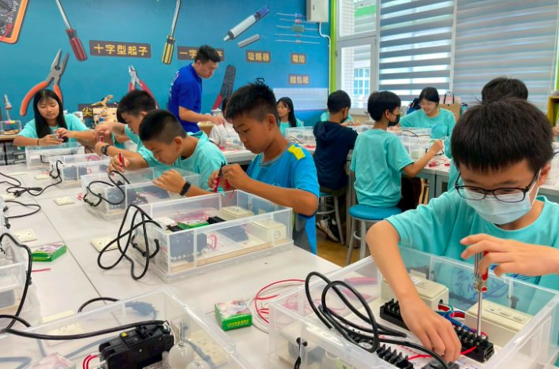

Hsinmin's Class 602 visited the Career Exploration Center at Chang'an Junior High today for a journey of knowledge and creativity. After an introduction to the center, the students were captivated by a 3D-printing robot demonstration — seeing how a computer design can be built up layer by layer into a real object, from everyday items to figurines and even machine parts, the magic of technology turning imagination into reality.
A teacher then introduced renewable energy, including wind power — using the wind's kinetic energy to spin blades and generate clean, renewable electricity — helping students understand the importance of sustainable energy and the close link between technology and environmental protection.
Next, Teacher Liang Kun-min from Xiushui Vocational High School led an exciting course, “Little Electrician: The Wonderful Journey of Circuits.” Students built their own remote-control walking robots — from recognising parts to assembling the structure and connecting the circuit — and watched their scattered materials become a robot that could move forward, to delighted smiles. A home-circuit session followed, introducing three-wire household wiring, switches, sockets, and fittings.
Thank you to the Chang'an JHS Career Exploration Center and Teacher Liang for the rich, professional, and fun lessons. We believe this rewarding learning journey will become an unforgettable pre-graduation memory for our children!

新民國小 602 班今日前往彰安國中職探中心，展開一場知識與創意的職業探索之旅。活動一開始，由主任帶領同學認識中心環境。其中最吸引大家目光的莫過於 3D 列印機器人展示——透過電腦設計圖檔，3D 列印機能將平面的創意逐層堆疊成真實物件，無論是生活用品、模型公仔，甚至機械零件都能製作，讓同學們深刻感受到科技將想像化為現實的神奇魅力。👾
緊接著老師介紹自然能源發電方式，其中風力發電利用風的動能推動葉片旋轉，再透過發電機轉換成電能，是一種潔淨且可再生的綠色能源。透過解說，同學們更加了解永續能源的重要性，也認識到科技與環境保護之間密不可分的關係。💨
隨後，由秀水高工梁棍閔老師帶來精彩課程——「小小水電工：電路的奇妙之旅」。同學們親手製作遙控走路機器人，從認識零件、組裝結構到連接電路，在老師耐心指導下，原本零散的材料逐漸組合成能前進移動的機器人，臉上都露出驚喜與滿足的笑容。接著的家庭電路實作課程，介紹家用三線式配線設計，認識開關、插座及器具之裝配，也透過動手實作了解電流如何流動。🪛🔧
感謝彰安國中職業探索中心精心安排豐富課程，以及秀水高工梁棍閔老師專業又有趣的教學，讓孩子們在探索與實作中開拓視野，體驗不同職業領域的魅力。相信這趟充實的學習之旅，將成為孩子們畢業前難忘的經驗與回憶！🫶